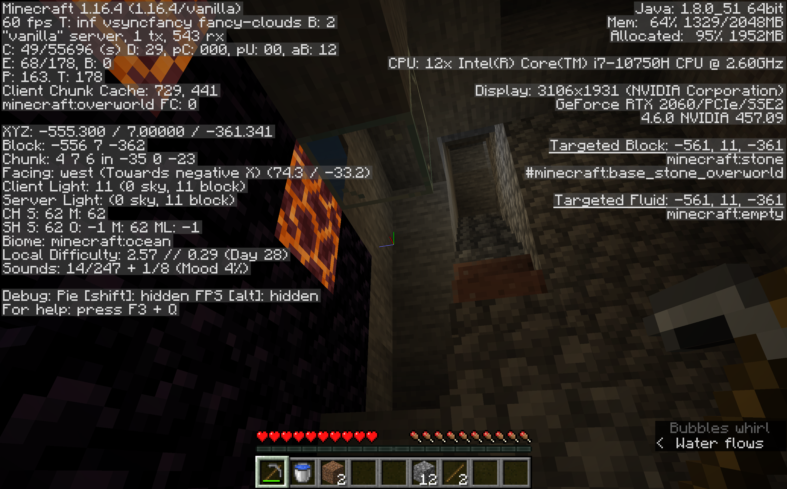
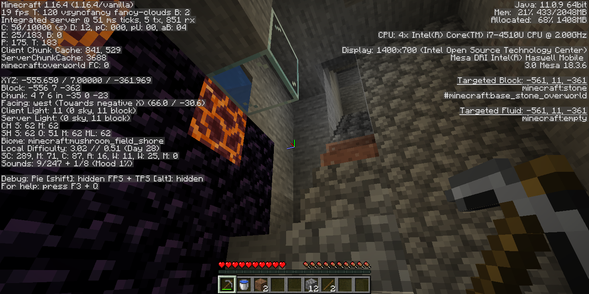

Can this be explained?


The image on the left is from my PC connected as a client over to my Linux machine. The image on the right is the Linux machine hosting the world.
(Although my PC is newer and more powerful, I sometimes get lazy and just play directly on the Linux machine.)
As you can see the screenshots are nearly identical:
- Same versions of Minecraft (different hardware and Java versions).
- Same data files.
- Same coordinates.
- Different biomes reported.
About two weeks prior, I reported something similar as a potential bug
(https://bugs.mojang.com/browse/MC-205643) because I would notice, on the PC, the changing of the biome
names as I went up and down the Y-axis in a straight line. If I played that same world in Linux, the biomes did not change along the Y-axis. I didnt really pay attention to that
difference between PC and Linux until now.